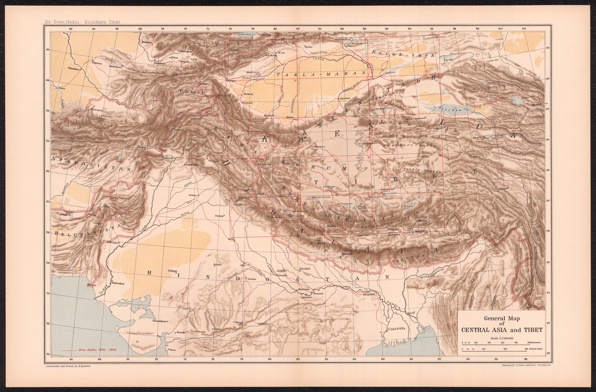

Click to enlargeSven Hedin's general map of Central Asia and Tibet, from his monumental Southern Tibet — the synthesis of his 1906–08 expeditions across one of the last great blanks on the map of Asia. The frontier beyond British India, filled in at last by a single explorer's instruments.
Authorship and object
Published by the lithographic institute of the Swedish General Staff in Stockholm (1917–22) as part of Sven Hedin's Southern Tibet, with cartographic work by Otto Kjellström and others; this general synthesis map is drawn at about 1:7,500,000.
The explorer's survey
Hedin (1865–1952) mapped vast tracts of southern Tibet and the Transhimalaya that had been blank or merely conjectured. The work rested on his own field measurements — compass bearings, chronometer and astronomical observations, paced distances and altitudes — from which he produced some 880 sketch maps and 1,736 hand-drawn panoramas of demonstrated geometric accuracy, synthesised into the published series. It was among the most rigorous individual exploratory surveys ever made.
The gaze
Where British India had been triangulated into a lattice, the high country beyond its northern frontier remained one of the earth's last unmapped interiors. Hedin's map is the explorer's gaze closing that final gap — four centuries after the Renaissance left blanks in the heart of Asia, the last of them is measured and drawn. The frontier of the unknown has been pushed to the roof of the world, and even there is being filled in.